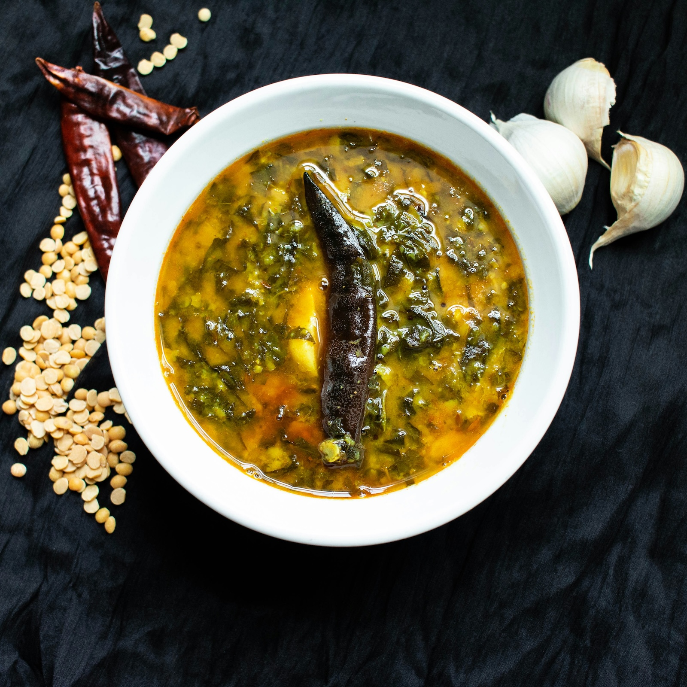

Back to home
Palak Paneer

Description
Palak Paneer is a classic Indian dish that is made with paneer cheese and spinach palak.
Ingredients
- 200 g of Paneer, cubed
- 200 g of Spinach, chopped
- 1 onion, finely chopped
- 1 tomato, finely chopped
- 1 garlic clove, finely chopped
- 1 tsp of garam masala
- 1 tsp of cumin
- 1 tsp of coriander
- 1 tsp of turmeric
- 1 tsp of curry powder
- 1 tsp of paprika
- 1 tsp of cayenne pepper
- 1 tsp of salt
- 1 tsp of pepper
- 1 tsp of sugar
- 1 tsp of vinegar
- 1 tsp of oil
- 1 tsp of butter
Steps
- In a large pot, heat the oil over medium-high heat. Add the onion, tomato, and garlic and cook until the onion is translucent.
- Add the paneer and cook until it is browned.
- Add the spinach and cook until it is wilted.
- Add the garam masala, cumin, coriander, turmeric, curry powder, paprika, cayenne pepper, salt, pepper, sugar, vinegar, and butter and cook until the sauce is heated through.
- Serve the palak paneer with some rice and naan.